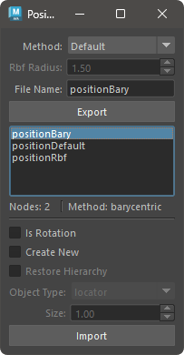
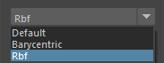
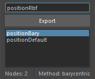
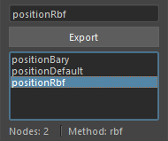
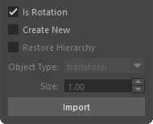
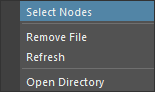

This tool allows you to export and import the position information of selected nodes.
This tool can export and import the position and rotation information of selected transform nodes to a file.
You can obtain and set position information in several ways. The methods are as follows:
Obtain the position information of the transform node in world space and reproduce it in world space.
Obtain the position information of the transform node in barycentric coordinates of the nearest triangle polygon from the node and reproduce it in the barycentric coordinates of the mesh.
When reproducing, you need to select a mesh with the same topology.
This method is effective when the transform node is on the surface of the mesh.
Obtain the position information of the transform node from the surrounding vertex positions and reproduce it on a mesh with the same topology.
When reproducing, you need to select a mesh with the same topology.
This method is effective when the transform node is inside the mesh.

Launch the tool from the dedicated menu or with the following command:
import faketools.position_import_export
faketools.position_import_export.show()

To export position information, follow these steps:
Select the method to export from Method.

Select the nodes to export position information according to the method.
Default
Barycentric
Rbf
Enter the file name to export in File Name.

Press the Export button.
When the export is complete, the exported file name will be displayed in the list.

Rbf method is selected, you can set the radius for export with the Rbf Radius value. If the behavior differs from the intended one when reproducing the position, increasing this value may achieve the desired behavior.To import position information, follow these steps:
Select the file name to import from the list.
Select the nodes to import according to the method used during export.
Default
Barycentric
Rbf
Set the options and press the Import button. By default, the position information will be applied to the nodes selected during export.

Options that can be set during import.
Is Rotation
Create New
Object Type will be created. When off, the position information will be applied to the nodes selected during export.Object Type
Create New is on.Size
Create New is on.Right-click on the list to display the context menu.

Select Nodes
Remove File
Refresh
Open Directory